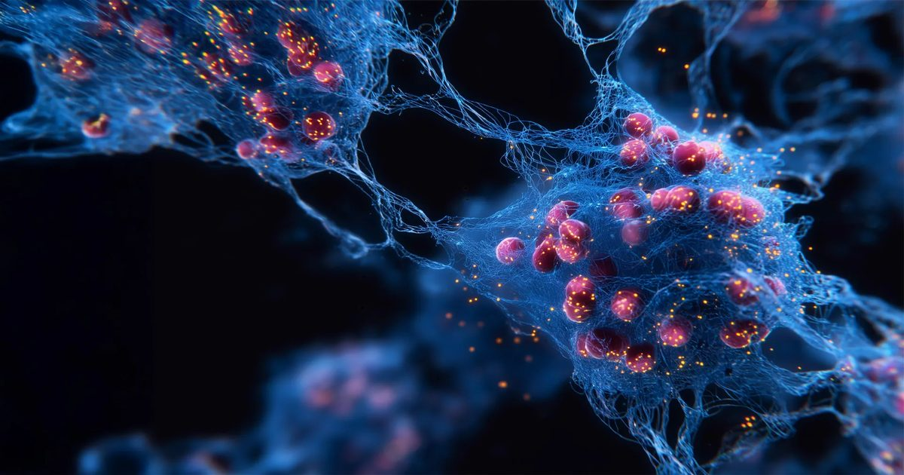

Клиника Майо открывает новые способы борьбы с «зомби-клетками», которые управляют старением
Ученые клиники Майо обнаружили удивительное новое понимание «зомби-клеток», стареющих клеток, которые задерживаются в организме и способствуют воспалению и болезням.
Семь исследований показывают, почему эти клетки вредны, и определяют новые стратегии нацеливания на них, включая природное соединение, содержащееся в помидорах.
У стареющих мышей экспериментальное лечение уменьшало воспаление и улучшало физическое и мозговое здоровье.
Результаты могут открыть дверь для терапии